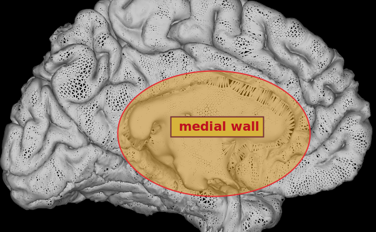
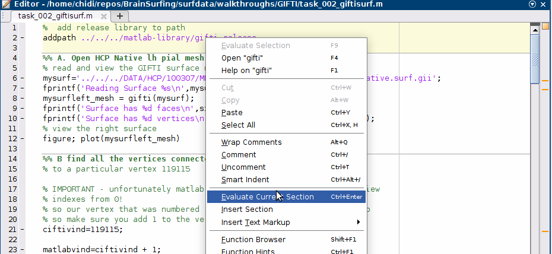
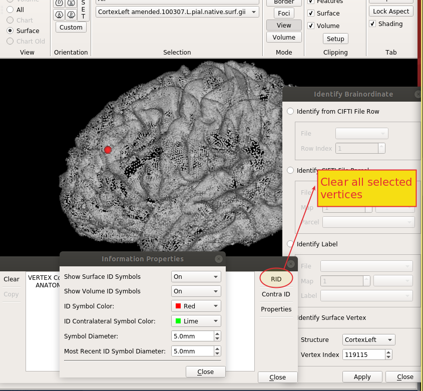
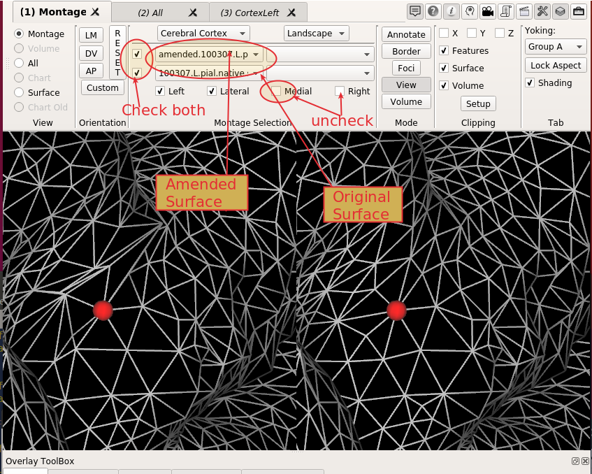
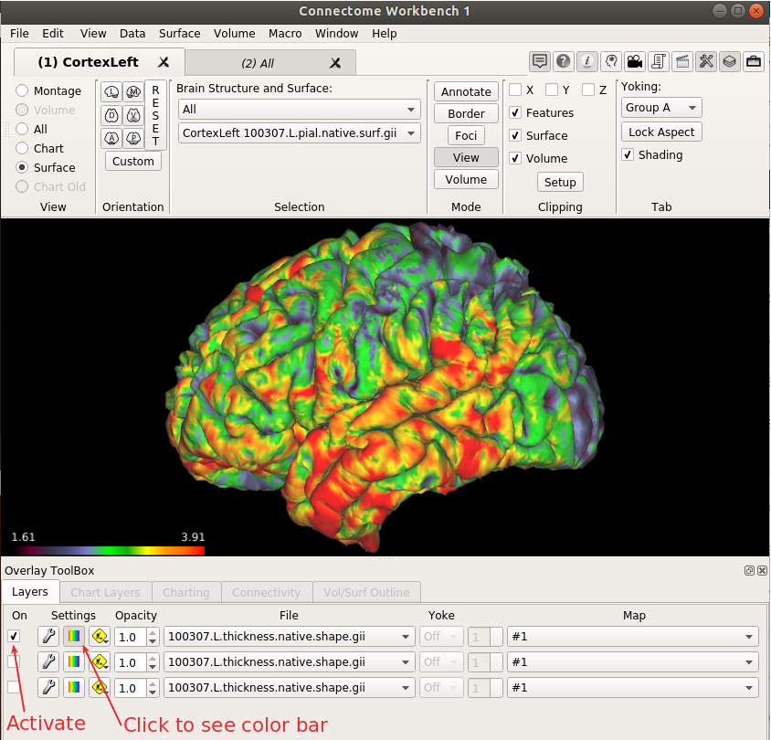
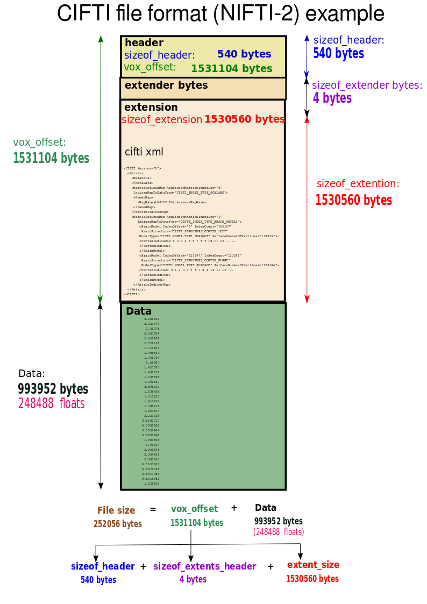
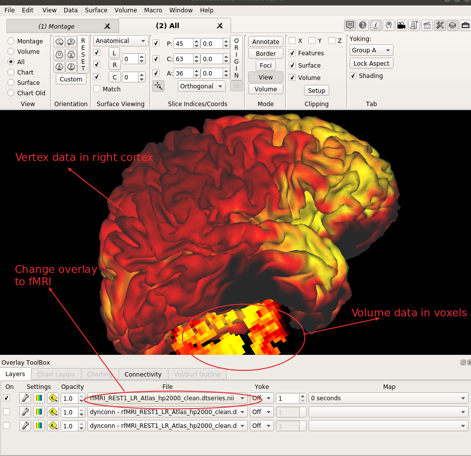
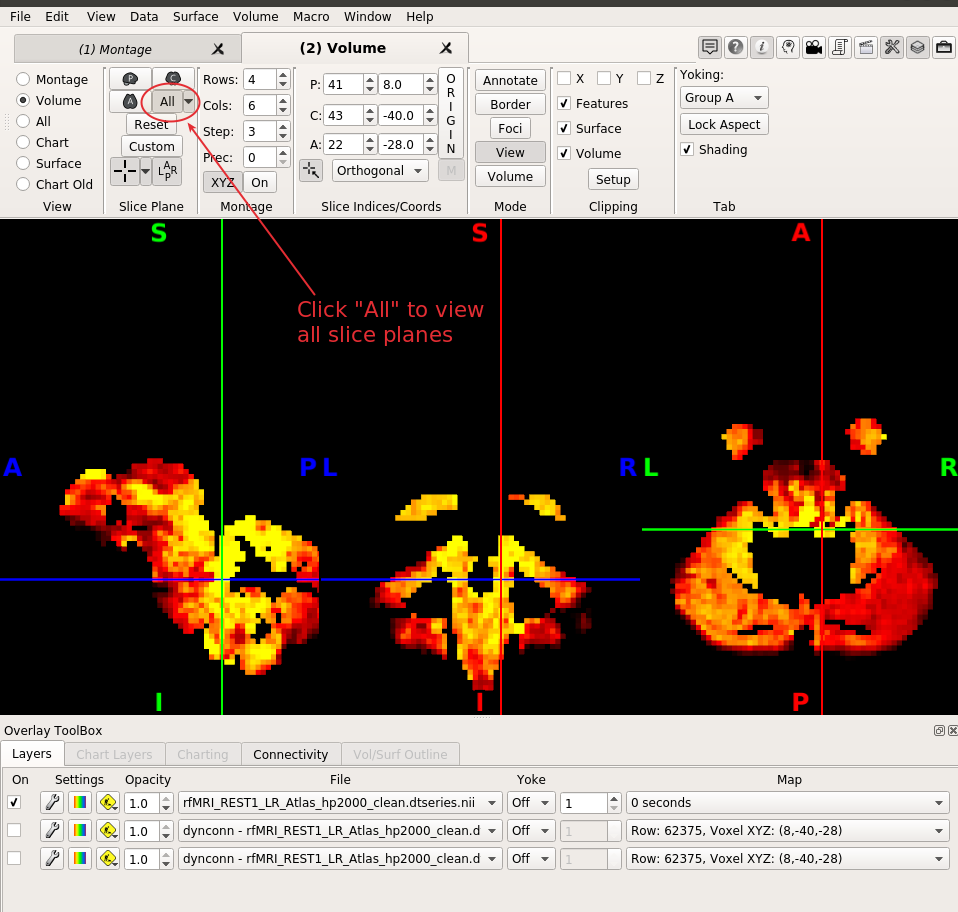
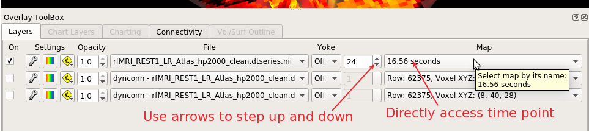
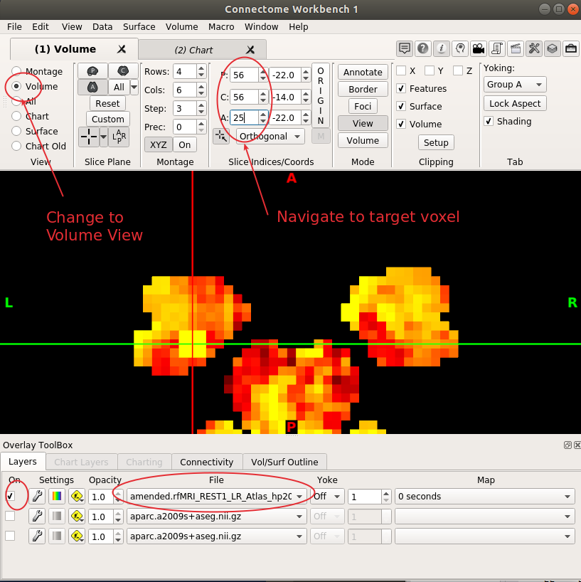

Practicum 8.1 - Surface-Based Data Formats
Synopsis
Surface-based data formats represent neuroimaging data in two main forms namely meshes and overlays. In both cases anatomical locations are represented by vertices which are arbitrary points in 3D space.
Surface meshes store 2 main types of information - the Cartesian location (x, y, z) of each vertex in 3D space and the triple of vertex indices that make up a triangular face on the mesh.
Surface overlays store attributes for each vertex. These attributes could be single value scalars like the cortical thickness at a vertex or a series of values like a time series from an fMRI or EEG experiment.
Objectives
This practicum will introduce you to working with surface-based data (meshes and overlays) using the GIFTI and CIFTI file formats. By the end of this practicum you should
- Be able to access the metadata of GIFTI and CIFTI files to determine the properties of the surface under study
- Be able to directly access the image data in a GIFTI and CIFTI file and work with it
- Be able to change the data in a GIFTI and CIFTI file and create a new file with your changes
- Visualize your GIFTI and CIFTI files using the workbench tool
Note
Some of the tasks you will accomplish with this practicum will not ordinarily be part of your typical neuroimaging analysis workflow. For example you will rarely if ever need to change the topology of a surface mesh. However the intention of these exercises is to cement your understanding of these formats by giving you hands-on experience with manipulating them albeit in somewhat artificial scenarios.
Downloads/Installation
This practicum requires the following materials/folder setup for successful complete:
- A reasonably recent version of matlab. The practicum was tested on version R2020a (linux), R2019a (windows) and R2018b (Mac) but should hopefully work on older versions as well.
- A copy of the HCP's Connectome workbench. We will be using
wb_viewfor viewing CIFTI and GIFTI files. The install is a zip file that you extract and the executable should be available after extraction. Depending on your platform you may need to double-click thewb_viewicon or add it to your path to access via the command line. Copies of workbench have also been packaged up at the Classhare for this lesson under the Software folder which you can access if you have trouble getting to the connectome site. There are 4 zip files with names that start withworkbench-..for different OS platforms. - The Matlab practicum files, Matlab libraries and data for this practicum are also all available at the Classhare folder under the practicum81 folder in a zip file practicum81.zip. Download this zip file to your local computer and extract.
- The practicum files can also alternatively be downloaded as a zip file from OSF in the folder 08-Surface-Based-Formats
Your folder structure should look like this after extraction.
└── practicum81
├── DATA
│ └── HCP
├── matlab-library
│ ├── cifti-matlab
│ ├── gifti-release
│ ├── helper-functions
│ └── xml2struct
├── prac81.pdf
├── task_002_giftisurf.m
├── task_003_giftioverlay.m
├── task_004_cifti.m
└── task_005_cifti.m
Provenance
Matlab libraries
The Matlab libraries used in this practicum are described below:
-
The HCP cifti-matlab library was in alpha-testing phase at the time of creating this practicum and so is liable to change in the future though hopefully not significantly. The version provided had its last commit
1e0ca9fbb0f9a8105d144ec6bc0de55b84d1b528onWed Sep 2 15:42:55 2020 -0500. Please refer to the cifti-matlab repository for announcements on when the alpha-testing is complete. In the meantime if you use this code for your own research then please appreciate that you do this at your own risk and there is a chance of errors. -
The gifti library was downloaded as a zip file
gifti-master.zip, extracted and renamed togifti-release -
xml2struct was downloaded directly from the mathworks file-exchange.
-
helper-functionsmostly contains custom functions written in-house to support tasks 4 and 5. The functionread_nifti2_hdr.mis a private function from the FieldTrip toolbox to help with reading NIFTI-2 files.
Data
We will be using a subset of data from the Human Connectome Project's Young Adult (YA) 1200 Subject Release. Specifically data from subject 100307. The HCP has terms of reference for using their data. To use HCP data please sign on to the HCP website and register for free.
Miscellaneous files
The documentation for this practicum has also been bundled with the practicum materials as prac81.pdf to mitigate against internet connectivity problems. The other four matlab files task_002_giftisurf.m, task_003_giftioverlay.m, task_004_cifti.m and task_005_cifti.m are needed to undertake the respective tasks below.
Task 1: Use wb_view to visualize GIFTI surfaces
- Open wb_view either by double-clicking the
wb_vieworwb_view.exeicon in your windows manager or by entering this in the command line if you have set up your paths in the command line interface correctly. - When wb_view opens click the
skipbutton in the dialog to get to the main screen - From the top menu choose
File>Open Fileand change the dropdown onFiles of type:toSurface Files (*.surf.gii) - Now navigate to
practicum81/DATA/HCP/100307/MNINonLinear/Native/ - You will be presented with a host of files
- with the left mouse button click on
100307.L.pial.native.surf.gii - Now pressing the CTRL key (Command key on Mac) again click with the left mouse button on
100307.R.pial.native.surf.giito select both surfaces. You should see that both files are reflected in theFile nametextbox. The pial that these surfaces refer to is the surface boundary between grey matter and CSF in the outer cortex. - Now click
Open, you should see the left and right pial surfaces displayed with lateral and medial views
-
At the top of the application change from (1) Montage to (2) All by clicking on the tab. You should see the left and right pial surfaces aligned on the screen. Use your mouse left button to rotate the brain around and your scroll wheel to zoom in and out
-
We can get a quick overview of these surfaces by choosing
Surface>Information. We can see that there are 130879 vertices and 261754 faces in the left hemisphere pial surface.
- For the rest of this exercise we just want to work with left hemisphere so we will uncheck the display for the right cortex in the (2) All tab.
-
Switch on edge view by clicking the
Surfacemenu option. ChoosePropertiesand change theDrawing TypetoLinks (Edges). Zoom in a little closer to see the triangular tesselation. -
identify any vertex you like and click on it. For this example I have stumbled upon vertex
119115which I have decided to probe. A dialog with title Information should pop up with vertex information. This dialog provides information about the vertex's hemisphere, label and its anatomical location in 3D Cartesian (x,y,z) coordinates. Notice also that the white vertex symbol icon is much larger than the width of the edges.
- Choose
Propertiesin the information dialog (Propertiesis underContra IDin the dialog) and change theSymbol DiameterandMost Recent ID Symbol Diameterto a suitable size. We chose0.5mmfor our example. You can also change theID Symbol Colorto another value.
-
Once you have selected a vertex we can now try and identify its neighbors.
-
For the first pass through this practicum you should avoid choosing a vertex on the medial layer as this will cause difficulties in task 4. To be super safe then just replicate the vertex we have chosen or choose a vertex that is easilly accessible on the lateral surface.
-
The medial layer contains vertices that are not actually on the cortical surface (actually these medial-layer vertices cut through subcortical grey matter structures and the Corpus callosum) but are required to maintain the spherical topology of the surface.

-
Select all the neighbouring vertices (all vertices connected by an edge to your chosen vertex). These should show up in the information screen. You can select and copy the text from this screen and place it in a text file. We will need this information for the next Task.
-
You can leave wb_view open but minimized and proceed to the next task.
Task 2: Use Matlab to manipulate GIFTI Surfaces
-
In this task we will be loading in the GIFTI surface
100307.L.pial.native.surf.giiwhich we visualized above and identifying the vertex and vertex neighbours we chose. We will then change the local topology of the surface by nudging these vertices by a random 3D translation and then save a new copy of the surface which we will visualize again using wb_view. -
Open Matlab and navigate to your the
practicum81folder containingtask_002_giftisurf.m. Double click this file to open it in Matlab. -
We will run individual sections of the Matlab code by right-clicking on each section (highlighted yellow when selected) and selecting
Evaluate Current Section. -
Select the 1st section and choose
Evaluate Current Selectionto run. This will ensure that Matlab can find the gifti-release library which we need to open and save GIFTI files.

-
If you haven't set the right path to the gifti-release library then you will see an error like this:
Warning: Name is nonexistent or not a directory /home/chidi/Downloads/ Practicum81/../matlab-library/gifti-release -
Now right-click and run Section A.
-
If the variable
mysurfis not pointing to the correct location for the data then you will get an error similar to this:Reading Surface ../DATA/HCP/100307/MNINonLinear/Native/100307.L.pial.native.surf.gii Error using xml_parser Cannot read XML document -
This section will plot a 3D model of the surface which can be rotated with the mouse. This is just to demonstrate that you can visualize your surface mesh within Matlab as well. You can close these windows whenever you want.
- you should also see that the expected number of faces and vertices are also printed to the screen. This information has been obtained using the
gifti-releaselibrariesgifti()function. The information is stored in the structuremysurfleft_meshmysurfleft_mesh = struct with fields: faces: [261754×3 int32] mat: [4×4 double] vertices: [130879×3 single]
Note
One source of potential confusion is that the gifti Matlab library indexes vertices starting from 1 but wb_view and the GIFTI specification start indexing from 0.
So the 1st vertex has an index of 0 in wb_view but has an index value of 1 in Matlab.
-
The
facesmatrix contains the 3 vertex indices that are joined together to form a face on each row. In Matlab we can view the first 4 faces as follows:mysurfleft_mesh.faces(1:4,:) 1 2 3 4 3 2 1 56 2 57 2 56 -
We see that the first face (row 1 above) comprises vertices 1,2 and 3 which are joined together by edges. Perhaps surprisingly we see that 56 and 57 are also joined to 2 to form the fourth face. This reinforces the fact that the vertex index is just a label and does not predict spatial proximity. Remember that this uses Matlab's indexing conventions. So wb_view would specify the first face as consisting of vertices 0,1 and 2.
-
The vertices matrix provides the anatomical location of each vertex. Looking at the first 4 vertices, we see that vertex 3 (i.e. vertex 2 in wb_view convention) has a location of -13.3332 mm, -106.5394 mm, -5.5976 mm
mysurfleft_mesh.vertices(1:4,:) -13.0844 -106.5673 -5.1778 -13.5373 -106.6587 -5.1817 -13.3332 -106.5394 -5.5976 -13.7358 -106.5008 -5.7497 -
Now run the next section B to find the neighbours of the vertex you located in task 1 above. Remember to change the vertex on line 25
ciftivind=to point to your vertex. If all goes well then you should see the same vertices you observed in wb_view. As already mentioned wb_view (and the GIFTI XML) start indexing vertices from 0 while the gifti matlab library starts indexing from 1. So we need to add 1 to the index we obtained from wb_view to create the correct index for use in Matlab. This is already accomplished for you in the code on line 29 bymatlabvind=ciftivind + 1;
- The code looks at all the columns of the faces matrix and picks out the lines that include our vertex and then does a union to create a set of vertices without duplication. The faces matrix contains a row for every triangular face. So below for example, the vertices 119116, 119106 and 119115 are connected as a face.
Find 119116 in column 1:
119116 119106 119115
119116 119128 119129
119116 119129 119117
Find 119116 in column 2:
118448 119116 119115
119106 119116 119107
Find 119116 in column 3:
118448 118449 119116
118449 119128 119116
119117 119107 119116
Amalgamate all the vertices and remove duplicates:
118448 118449 119106 119107 119115 119117 119128 119129
- Now we will run section C to perturb each neighbouring vertex by a random number between 2 and -2 mm.
- Note: This scenario will rarely happen in real-world analysis but has been designed to give you insight into the internal workings of surface-based formats. Packages like FreeSurfer do allow you to manually manipulate surfaces to correct for errors in initial modelling and this exercise demonstrates how this would work in principle.
-
This code goes through a loop and for each vertex obtains the x, y and z anatomical location information and perturbs it by a random number. We then create a new GIFTI file called
amended.100307.L.pial.native.surf.giiin your current folder which contains the changed vertex locations in a new surface. -
Now we will return to wb_view to view your new GIFTI file.
-
Open your amended GIFTI surface
amended.100307.L.pial.native.surf.giithat was created in thePracticum81folder in wb_view -
The original
100307.L.pial.native.surf.giithat was obtained from the folderPracticum81/DATA/HCP/100307/MNINonLinear/Native/should already be loaded into wb_view if it was not closed previously. If not then open this GIFTI file as well. We will be comparing both of them in wb_view. -
By default there are two tabs provided when you first open wb_view these are (1) Montage and (2) All
-
You can click on any of the tabs and change the View to Surface by clicking the corresponding radio button.
-
It's also possible to create a new tab and change the view to Surface there.
-
Ensure that under
Brain Structure and Surfacethat the first drop down box is set asAllor asCortexLeftand that the second drop down is set to ouramended.100307.L.pial.native.surf.giias the selected surface. -
let's locate our original vertex from task 1. The sequence of steps to take will depend on the state your GUI is in based on subsequent actions. The steps below should hopefully get you there regardless.
-
Click on
Windowand thenidentifyand click on theidentify Surface Vertexand enter the vertex Index. For our example we used119115. If you have several vertices displayed which are confusing you can clear all vertices by clicking onRIDbutton on the Information Properties dialog. -
After clicking
applyit might also help to change the size and color of the vertex symbol to a larger value and/or more vivid color respectively if you haven't already done so previously. You may also have to zoom out and/or rotate the brain if you chose a vertex hidden from the lateral view. You should be able to spot your vertex.

- Now Change the Surface properties to
Link(Edges)(if not already changed from previous steps) and zoom in closer to see how the pertubations you made to the neighboring vertices have changed the topology. You will probably need to change the symbol diameter to something smaller. You should notice that the topology of your vertices has changed.
- You can contrast this with the original by clicking back and forth on the dropdown in the tab (under
Brain Structure and Surface) switching between the original surface and your amended surface.

- You can also click on a Montage view to see both surfaces side by side (You will need to deselect either the medial or lateral checkbox to see the vertex and neighbours properly side by side). You will also need to select both surfaces as different layers in the montage selection. You should confirm that you have successfully change the topology of your surface.

-
We won't dwell too long on the next two sections but these sections give you more insight into the XML structure of the GIFTI structure so that you can compare that with the data provided by the gifti matlab library. Essentially this library just reads this XML in the GIFTI to create the
facesandverticesstructures that you have just looked at. -
We will return to the Matlab file to run section D to view the GIFTI metadata in a browser to see exactly how the XML is used to represent the GIFTI format. All this section does is re-save the GIFTI in ASCII format as
mygifti_allxml.giiso that most text editors can view it conveniently. -
After running section D, you can now simply open the created
mygifti_allxml.giifile directly in your browser or by usingVScodeif it does not open automatically in firefox. (you may get an error on windows that states'firefox is not recognized..'- this can be completely ignored and the command console that opens with this message can be closed) -
Some browsers like Chrome may require you to explicitly rename this as an xml file
mygifti_allxml.xmlin order to view the XML with helpful highlighting and the ability to collapse and expand sections. -
You can collapse and expand XML sections in the browser by clicking on the -/+ signs respectively. Notice that the vertex anatomical location information is represented as a DataArray with an Intent name of
NIFTI_INTENT_POINTSET. The number of vertices is captured by Dim0="130879". The triangular faces are represented in the second data array asNIFTI_INTENT_TRIANGLE.
- Expand the Data tag in the
NIFTI_INTENT_POINTSETdataarray and then look at the surface mesh vertex information that is loaded in by the gifti library. Notice how the columns are loaded in first before the rows. This is known as Column Major Order and is specified also in the XML as a DataArray attribute as<DataArray ArrayIndexingOrder="ColumnMajorOrder"..

-
Notice also that for the faces defined as
NIFTI_INTENT_TRIANGLEin the second DataArray that the vertices are indexed starting from zero and are also stored using Column Major Order. -
Section E accomplishes the same as Section D except that now the xml data is loaded into a Matlab structure. You can skip this section as all it does is corroborate what you have already seen above. It is divided into 2 parts, E1 and E2
-
Run Section E1 to fix the xml in the GIFTI. We need to do this as unfortunately there is a slight problem reading the XML file into Matlab as the 2nd line which starts
<!DOCTYPEcauses problems with the parser. The linesed 2d...in the Matlab file is written to delete this line on unix and save a new text file calledmygifti_xml.giiwhich is then parsed. -
In windows you will get an error that states
'sed is not recognized..'- this can be completely ignored and the command console that opens with this message can be closed). You will need to usepowershellinstead if its available or alternatively manually open the xml file in a text processor and delete the 2nd line. In Matlab you can invoke a powershell shell as follows:!powershell
After powershell loads enter the command below to remove the 2nd line:
Get-Content mygifti_allxml.gii | Where {$_ -notmatch 'DOCTYPE'} | Set-Content mygifti_xml.gii
Then return to Matlab by typing exit
-
Now run Section E2 to load the XML into a Matlab structure.
-
You can now identify the same XML structures as we saw above in the browser. For example
myXML.GIFTI.DataArray{2}.Datagives us the faces information for the surface:myXML.GIFTI.DataArray{2}.Data = Text: '0 3 0 56 0 0 1 1 2 2 2 72 3 3 4 4 6 14 6 6 6 11
Task 3: Use Matlab to manipulate and visualize GIFTI overlays
We have been able to work with and manipulate GIFTI surface files. In this task we will now look at an example of a GIFTI overlay that maps cortical thickness values onto the pial vertices and we will attempt to manipulate and visualize this overlay.
- If wb_view is already open from previous tasks then you can use the
File>Save/Manage Filesfunctionality to selectively close files. Select to close the Right Pial and the amended Left pial. We will be using the original Left pial in this task.
- Alternatively if you want to start from scratch then just choose
File>Close all files

- in wb_view load in the surface
100307.L.pial.native.surf.giiagain fromPracticum81/DATA/HCP/100307/MNINonLinear/Native/if not already open. Click on Surface to view the Left hemisphere. Now load in the cortical thickness overlay100307.L.thickness.native.shape.giifrom the same location. You will need to change theFiles of typefield toMetric Files (*.func.gii *.shape.gii)orAny File (*)to be able to select the thickness overlay. Activate the layer by clicking on the checkbox alongside it. Also click on the color bar to see the range of cortical thicknesses across the brain and their associated colors.

- Now locate the vertices you looked at previously (using
Window>identify) and find their cortical thicknesses by looking at the information dialog. Notice that for our central vertex (119115 in this case) we have a cortical thickness of 3.54125 mm.
-
We will now open this overlay in Matlab, change the cortical thickness of our target vertex and its neighbors and visualize the changed overlay in wb_view
-
Open the file
task_003_giftioverlay.min matlab. -
As before run each section in Matlab separately to follow along with what is happening in the code. First run the
addpath ..section to ensure that the gifti library is accessible and that all Matlab windows are closed and variables cleared. -
In section A we load in the surface as before and now also load in the cortical thickness overlay. Notice that the overlay and the surface match as the number of vertices is equal to the number of thickness values.
Reading Surface ./DATA/HCP/100307/MNINonLinear/Native/100307.L.pial.native.surf.gii Surface has 261754 faces Surface has 130879 vertices Reading Overlay ./DATA/HCP/100307/MNINonLinear/Native/100307.L.thickness.native.shape.gii Overlay has 130879 values -
The overlay has all its thickness values for each vertex stored in a
cdatamatrix:myoverlayleft = struct with fields: cdata: [130879×1 single] -
Using the gifti library's overloaded
plotcommand we also visualize the surface in one window and also observe overlay plotted on the surface in another window with a color scale used to designate varying thickness.
-
In Section B we see a print out of the cortical thickness values at our neighbouring vertices which should match the values we identifed in wb_view. In Section C we set the thicknesses of our chosen vertex and its neighbors to a uniform value of 2mm and then save a copy called
amended.100307.L.thickness.native.shape.gii. -
Return to wb_view and open the
amended.100307.L.thickness.native.shape.giioverlay. Compare this with the original100307.L.thickness.native.shape.giioverlay and confirm that all the vertices now have a thickness value of 2mm.
- You can change what overlays are activated and the precedence in which they are displayed by selecting different files and/or toggling the visibility of the layer. You may also want to change the
Drawing TypeinSurface>PropertiestoTrianglesto see a clear thickness change in the patch of cortex as you toggle between layers.
-
In addition you may also want to view the amended cortical thickness overlay
amended.100307.L.thickness.native.shape.giion your amended pial surfaceamended.100307.L.pial.native.surf.giior on other surfaces that are available in the same directory. These surfaces are all in vertex correspondence for the subject 100307. -
In section D and E you can again study the XML structure of the overlay as you did in task 2 above to see how it corresponds to the gifti structure loaded into Matlab.
Task 4: Use Matlab to manipulate and visualize CIFTI files
So far we have learned to work with GIFTI files. In this penultimate task we are going to work with CIFTI files which combine both volume data for subcortical structures and surface data for cortical structures into one file. Unfortunately the HCP's Matlab library was still in Alpha testing at the time of creating this practicum and so we need to be aware that there is a slight chance that the coding conventions used here may change however the overal conceptual approach should remain the same.
We will work with HCP data again and this time with CIFTI cortical thickness data 100307.thickness.native.dscalar.nii from the left and right cortex.
To visualize CIFTI data in wb_view we need a GIFTI surface file that is associated with the CIFTI data. Close all loaded surfaces and overlays if wb_view is already open.
- Open wb_view and load in GIFTI surface
100307.L.midthickness.native.surf.gii- this surface is midway between thepialsurface we used previously and thewhitesurface. Now load in the midthickness surface for the right hemisphere100307.R.midthickness.native.surf.gii. Click on All view to see both hemispheres aligned in the view. You can rotate the whole brain to a perspective that works for you.
- Now open
100307.thickness.native.dscalar.nii- you will need to specify Files of type: (*.dscalar.nii) to be able to select this file. Activate the layer by clicking on the checkbox and notice that this CIFTI file has cortical thickness information for both hemispheres.
-
lets return to Matlab and open the Matlab file
task004_cifti.mand execute the prelim section to load in the Matlab libraries that we need. -
In Section A we will briefly explore the overlay
100307.thickness.native.dscalar.niias a NIFTI-2 file. We will use a private functionread_nifti2_hdr.mwhich is packaged as part of theFieldTripMatlab library. The diagram below shows how a NIFTI-2 file is used to package up this CIFTI.

-
We can confirm that the size of the CIFTI file in bytes is equal to the size of the voxel offset field plus the data size in bytes:
>> filesize = 2525056 >> nii2.vox_offset 1531104 >> nii2.dim 6 1 1 1 1 1 248488 1 -
where the value of
nii2.dim[7] = 248488is the data size in floats which is equal to4*248488=993952in bytes. The XML is thus embedded in the extent section between the header and the data. It is this section that the cifti-matlab library reads to determine exactly how the surface and volume models are set up.
Note
MacOS users may see an error as shown below when running section B below.
Invalid MEX-file
'/Practicum81/matlab-library/cifti-matlab/ft_cifti/@xmltree/private/xml_findstr.mexmaci64':
dlopen(/Practicum81/matlab-library/cifti-matlab/ft_cifti/@xmltree/private/xml_findstr.mexmaci64,
6): Library not loaded: @loader_path/libmex.dylib
This is due to an incompatibility with the xml_findstr.mexmaci64 file which is located at practicum8.1/matlab-library/cifti-matlab/ft_cifti/@xmltree/private
Please replace this file by simplying copying over one of the versions of this file from either of the folders macmexReplace1_ft (first choice) or macmexReplace2_orig (second choice) which are in the same location. Ignore the folder macmexReplace_dup as it just contains a copy of the existing xml_findstr.mexmaci64.
-
Run Section B to explore the CIFTI XML file in a Matlab structure and in a browser.
-
Notice that like the gifti overlay this cifti overlay has data for both cortices in a
cdatastructure which can be accessed asciiall.cdata>> ciiall ciiall = struct with fields: metadata: [1×3 struct] diminfo: {[1×1 struct] [1×1 struct]} cdata: [248488×1 single] -
The xml data has also been stored in a CIFTI structure
>> ciixml ciixml = struct with fields: CIFTI: [1×1 struct] -
The information stored in the above two structures matches the XML data that can be visualized in the browser.
-
The code has been set up to open the CIFTI XML automatically in firefox if it is installed in your path but this may not work on your system without some tweaking. You can also simply view the XML directly in a browser or in VScode by opening the file
debug.xmlthat is created in your current folder. -
Notice that the first dimension is
CIFTI_INDEX_TYPE_SCALARSwhich means that each vertex/voxel has a single scalar value which in this file is the cortical thickness. Also notice that the second dimension isCIFTI_INDEX_TYPE_BRAIN_MODELSwhich is used to map every voxel/vertex in a cortical or subcortical structure. Just the left cortexCIFTI_STRUCTURE_CORTEX_LEFTand the right cortexCIFTI_STRUCTURE_CORTEX_RIGHTare represented in this file.
-
Information for each cortex can be obtained by looking at the
diminfofields. Here we look at the model for the CORTEX_LEFT which is contained indiminfo{1}.models{1}>> ciiall.diminfo{1}.models{1} ans = struct with fields: start: 1 count: 125197 struct: 'CORTEX_LEFT' type: 'surf' numvert: 130879 vertlist: [1×125197 double] -
Unlike the GIFTI Matlab library that indexed vertices starting from 1, this CIFTI library uses an index to index the vertices! This is a little complicated but in essence if we look at the
vertliststructure for the first three vertices in the left hemisphere we see that they are correctly identified as 0,1 and 2.ciiall.diminfo{1}.models{1}.vertlist(1:3) ans = 0 1 2 -
As already mentioned, the data structure
ciiallcontains all the cortical thickness data for both hemispheres inciiall.cdataindexed starting from 1 to 125197 for the left cortex and from 125198 to 248488. These indexes are used as pointers into a vertex listvertlistwhich is stored for each surface. So the cortical thickness values for the first three vertices 0,1,2 in the Left hemisphere are obtained as follows:ciiall.cdata(1:3) ans = 3×1 single column vector 2.201649 2.323979 2.41378 -
There however appears to be an inconsistency with the total number of vertices allocated to the overlay. In the last task we had 130879 vertices in the left hemisphere but here we have 125197 vertices assigned (roughly about 5600 vertices fewer). What's going on?
-
Essentially the HCP CIFTI files do not store data for the medial layer of each cortex. We saw the medial layer in the first task. We will identify these medial vertices and visualize a few of them on the left cortex.
-
Run section C to print out all the vertices that are missing from the left cortex. These are the medial vertices. There should be
5682vertices in the medial layer displayed to screen. Select one or a few of them and using theidentifytool inwb_viewtry to see where they are. You will need to use the surface view and visualize the left cortex only so you can see these vertices. Some of these are easier to spot than others.
- In section D and E we do what we did in task 3 and will now go ahead and change the value of a vertex and its neighbors to a constant value of 2mm cortical thickness. The code uses a vertex value of 119115 but of course you should use any vertex you like except for the medial vertices which the CIFTI file does not track. Open the
amended.100307.thickness.native.dscalar.niithat is created in your current directory in wb_view and navigate to the vertex to confirm that changes have been made.
Task 5: Use Matlab to manipulate and visualize CIFTI files with volumes and surfaces combined
-
We now look at a slightly more complex CIFTI file which stores fMRI data for Surface and Volume structures simultaneously. We will be working in the HCP's standard space for this and so will close all the files in wb_view and then load in the surfaces which we will be using for this exploration.
-
Click on
File>Open Fileand navigate to/DATA/HCP/100307/MNINonLinear/fsaverage_LR32k/and open the surfaces100307.R.midthickness.32k_fs_LR.surf.giiand100307.L.midthickness.32k_fs_LR.surf.gii -
select the All view and then load in the fMRI
dtseries.niiCIFTI filerfMRI_REST1_LR_Atlas_hp2000_clean.dtseries.niifrom the locationDATA/HCP/100307/MNINonLinear/Results/rfMRI_REST1_LR/. -
Change the file overlay from
dynconn - rfMRI_REST1_LR_Atlas_hp2000_clean.dynconnto the dtseriesrfMRI_REST1_LR_Atlas_hp2000_clean.dtseries.niiand switch on the overlay to see the first volume of the resting state fMRI series which has an index of 1 and a Map value of 0 seconds. -
Rotate the brain to get a better view of the fMRI data. Notice that there are values in both the cortex (surface-based data represented by vertices) and in the subcortex (volume-based data represented by voxels).

-
To navigate the volume-based data more conveniently you can click on the Volume view to access the traditional volume viewing interface. In Slice Plane pane (not the View Pane!) you can select All to view Axial, Parasagittal and Coronal planes at the same time.
-
Again you will need to switch on the overlay and choose
rfMRI_REST1_LR_Atlas_hp2000_clean.dtseries.niiover thedynconn...overlay. You can move through volume slices by holding the left mouse button and dragging the mouse. You can zoom in by using the mouse scroll wheel.

- To help with spatial awareness you can load in a NIFTI-1 T1w volume. Open
T1w_restore_brain.nii.gzwhich is available at/DATA/HCP/100307/MNINonLinear. Activate the overlay so that it is visible.

- In both the voxel and surface view, individual fmri instances at each TR can be stepped through by clicking on the index arrows. You can also navigate to a specific timepoint in the series by clicking on the map drop down and selecting the time instance of interest.

-
One nice application within
wb_viewis the ability to interactively view functional connectivity. To see this in action Let us activate the All tab. -
We can then load in Freesurfer's Destrieux atlas which has been converted to gifti format. The left and right hemisphere atlases are called
100307.L.aparc.a2009s.32k_fs_LR.label.giiand100307.R.aparc.a2009s.32k_fs_LR.label.giiand are available here/DATA/HCP/100307/MNINonLinear/fsaverage_LR32k/. -
Activate all three overlays in the All view and from top to bottom select the
Dynconn - rfMRI..layer, then the Left and Right atlas label files. -
Now click on any brain area and you will see the functional connectivity of every other vertex to that vertex which has been calculated dynamically. If you spin the cortex around you will also see that the connectivity is also calculated for voxels as well. The areas which are functionally connected are displayed with colors that represent higher correlation. So in the example below all the yellow areas are functionally connected.
- For the above we used a different color map which is accessible from the little wrench symbol. You can also view the scale used for the color bar by clicking the multi-colored bar.
-
Back to Matlab now so we can explore a little more how this CIFTI file stores both volumes and surfaces in the same NIFTI-2 file. Open
task_005_cifti.mand run the first section as usual to clear the workspace and add the necessary libraries to our path. -
Run Section A to see how the CIFTI XML has different sections for surfaces and for voxels. Note that each volume structure has an individual label e.g CIFTI_STRUCTURE_ACCUMBENS_LEFT. As you did in Task 4 you can query the XML directly in the structure
ciixmland also compare this with the data that has been stored in the data structureciiallby the HCP Matlab library. -
The output that is displayed in the command window is obtained by going through the XML file. It shows that information about voxels and vertices are stored at the same time in the XML file and that the actual overlay data for each vertex and voxel is indexed sequentially in the NIFTI-2 file. So for example with our CIFTI file if we read off a value at row position 59695 in the data array then this will be a value in AMYGDALA_LEFT (between 59688 and 60002)
... Model 1 is a surface of CORTEX_LEFT with 29696 verts valued out of 32492 vertices; start from 1 and end at 29696 Model 2 is a surface of CORTEX_RIGHT with 29716 verts valued out of 32492 vertices; start from 29697 and end at 59412 Model 3 is a volume of ACCUMBENS_LEFT with 135 voxels; start from 59413 and end at 59547 Model 4 is a volume of ACCUMBENS_RIGHT with 140 voxels; start from 59548 and end at 59687 Model 5 is a volume of AMYGDALA_LEFT with 315 voxels; start from 59688 and end at 60002 Model 6 is a volume of AMYGDALA_RIGHT with 332 voxels; start from 60003 and end at 60334 ... -
The code has been set up to open the CIFTI XML automatically in firefox if it is installed in your path but this may not work on your system without some tweaking. You can also simply view the XML directly in a browser or in VScode by opening the file
debug.xmlthat is created in your current folder. -
In section B, we will now take an arbitrary vertex 17617 in the Right hemisphere and plot the fmri data in that vertex along with its closest neighbors. Observe that we have to check for existence of the neighbors that we find in the available list of vertices because one of the neighbors might actually be in the medial layer.
This is achieved for you using the code neighindex=ismember(visverts,allverts); which takes allverts which includes vertex 17617 as well as its close neighbours and compares it against all the visible vertices that are not on the medial layer.
Notice also how we have to pinpoint the Right Hemisphere vertex data within ciiall.cdata data by using an offset because the ciiall.cdata is populated first with values from the left cortex but the Right Hemisphere starts indexing its vertices from 0. This is achieved already for you using the code findRHneighbors=findneighbors + ciiall.diminfo{1}.models{2}.start - 1 to identify the vertices and then plot(ciiall.cdata(findRHneighbors,:)') to display their fMRI series.
-
In section C, we do the same for another arbitrary point on the Right cortex, vertex 8470 and we see a plot of the time series for this vertex and its neighbors.
-
In section D, we now switch gears and look at a volume. We will investigate the Left Hippocampus which is indexed as model number 14 in the array of available models. Volumes are indexed using a voxel list
voxlistwhich is part of the structciiall.diminfo{1}.models{14}.voxlist.ciiall.diminfo{1}.models{14} = struct with fields: start: 84561 count: 764 struct: 'HIPPOCAMPUS_LEFT' type: 'vox' voxlist: [3×764 double] -
The voxel list is actually a 2D matrix with 3 rows representing the i, j and k index coordinates in the x, y and z directions.
ciiall.diminfo{1}.models{14}.voxlist(:,1:3)' ans = 55 60 21 56 60 21 57 60 21 -
We will now use an arbitrary voxel 56,56,25 within the Left Hippocampus and identify its potential neighbors. We allow diagonal voxel elements to be classified as neighbors and so a voxel can have potentially 26 close neighbors.
-
Again as with the vertices we check the
voxlistfor existence as some of these voxels might be in other structures and thus not accessible within the Left Hippocampus. We do find that there are 26 neighbors to our voxel. -
In Section E we simulate an fMRI signal and place identical copies of it in vertex 17617 and its 6 neighbors, vertex 8470 and its 6 neighbours and voxel 56,56,25 and its 26 neighbors. And finally in section F we save a copy of this in a new CIFTI file called
amended.rfMRI_REST1_LR_Atlas_hp2000_clean.dtseries.nii -
Now let's return to wb_view. It might be easier to close all files and then load in the following files:
-
From
/DATA/HCP/100307/MNINonLinear/fsaverage_LR32k/load in the following:100307.R.midthickness.32k_fs_LR.surf.gii,100307.L.midthickness.32k_fs_LR.surf.gii, and100307.R.aparc.a2009s.32k_fs_LR.dlabel.nii
-
From
/DATA/HCP/100307/MNINonLinear/load in the following:aparc.a2009s+aseg.nii.gzandT1w_restore_brain.nii.gz
-
Finally we can now load in the amended fMRI from the current directory
amended.rfMRI_REST1_LR_Atlas_hp2000_clean.dtseries.nii -
Select Volume view and activate the
amended.rfMRI_REST1_LR_Atlas_hp2000_clean.dtseries.niilayer. Deselect the T1w_restore_brain.nii.gz layer and any other layer that may be activated in the Volume view. This ensures that the coodinate system of theamended.rfMRI_REST1_LR_Atlas_hp2000_clean.dtseries.niilayer, takes precedence in the next step. -
In the Slice Indices/Coords section enter in the voxel coordinates of the left hippocampal voxel
56,56,25in the first column. The cross-hairs should center on that voxel. Zoom in to the voxel by using the mouse scroll wheel. The image below shows an Axial volume view.

- Now activate the
aparc.a2009s+aseg.nii.gzlayer and click on the crosshairs to confirm voxel56,56,25is in the Left Hippocampus. Also notice that the voxels around it have the same value as we would expect.
- Deactivate the
aparc.a2009s+aseg.nii.gzlayer and now change theamended.rfMRI_REST1_LR_Atlas_hp2000_clean.dtseries.niilayer. todynconn - amended.rfMRI_REST1_LR_Atlas_hp2000_clean.dynconn
- Now change the view to All, deactivate the Left cortex to make the left hippocampus more visisble. Activate the right cortex and rotate the brain to view the Right hemisphere and also activate the
dynconn - amended.rfMRI_REST1_LR_Atlas_hp2000_clean.dynconnlayer. You should be able to identify that the vertices 8470 and 17617 are functionally connected to the hippocampus. This is what we expect as we placed identical fmri values in all these three regions.

- You may want to experiment with different color palette settings and/or views to get a more dramatic effect. Shown below is the
magmacolor palette with a range defined from0.2to-0.2used in the All view with the voxel settings set at56,56,25.
- Clicking on the right hemisphere outside of vertices 8470 or 17617 will reduce the functional connectivity of the hippocampal voxels.
- And clicking on those vertices will re-establish the functional connectivity with the hippocampus.
Final words
This concludes this introduction to the GIFTI and CIFTI formats. This practicum has used Matlab libraries to query, read and write Surface-Based formats however there are other approaches like the Python-based NiBabel library which provides functions for working with Cifti and Gifti files.
To gain more experience using wb_view then material from from the HCP 2018 Course and the HCP's Connectome Workbench v1.0 Tutorial might be useful.
Please provide any corrections and suggestions by email or as issues on GitHub
Acknowledgements
Huge thanks to Dianne Patterson for all her incredibly helpful comments and hard work testing this practicum. While all errors are mine, this exercise would have been much poorer without her support and insights.
Thanks also to Tim Coalson for important clarifications on terminology, insight into the mex issue and also for pointing out efficient ways for using the cifti-matlab library. I am working to include these changes as soon as possible.
Troubleshooting
wb_view prevented from running in Windows
In windows 10 you may get a warning dialog stating that Windows protected your PC when you try to run wb_view.exe. If you downloaded this directly from the HCP website then you should be reassured that this is safe. Just click on More Info and then Run anyway.
wb_view sluggish/behaving erratically in Windows
It is possible that your system has an outstanding windows update. Run Windows Update on your computer. Shutdown and restart and then reinstall wb_view to fix this.
Invalid MEX-file in Mac
When running one or two of the exercises on the Mac you may get an error related to Invalid MEX-file
```
Invalid MEX-file
'/Practicum81/matlab-library/cifti-matlab/ft_cifti/@xmltree/private/xml_findstr.mexmaci64':
dlopen(/Practicum81/matlab-library/cifti-matlab/ft_cifti/@xmltree/private/xml_findstr.mexmaci64,
6): Library not loaded: @loader_path/libmex.dylib
```
This is due to an incompatibility with the xml_findstr.mexmaci64 file which is located at practicum8.1/matlab-library/cifti-matlab/ft_cifti/@xmltree/private
Please replace this file by simplying copying over one of the versions of this file from either of the folders macmexReplace1_ft (first choice) or macmexReplace2_orig (second choice) which are in the same location. Ignore the folder macmexReplace_dup as it just contains a copy of the existing xml_findstr.mexmaci64.